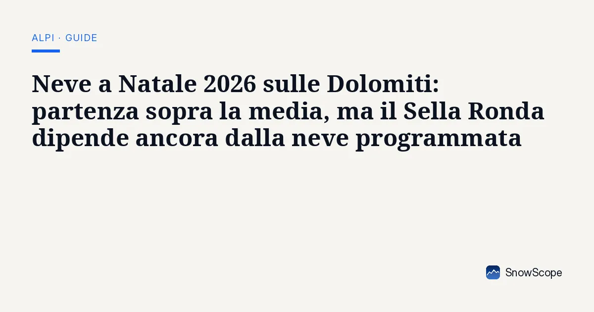

Neve a Natale 2026 sulle Dolomiti: partenza sopra la media, ma il Sella Ronda dipende ancora dalla neve programmata
Sì, a Natale sulle Dolomiti si scierà, ma più grazie all'innevamento programmato che alla neve naturale: in un inverno normale il 25 dicembre Cortina ha 36 cm a 1.799 m e la Val Gardena 28 cm a 1.882 m. Quest'anno la partenza è buona: dopo la nevicata di questa settimana Arabba ha 28 cm a metà pista, dove la norma di fine novembre è 19 cm, e la Marmolada 44 cm in quota.
Le previsioni neve in tempo reale per Dolomiti nell'app SnowScopeAltezza neve, allerte powder e mappa 3D, gratis.
La nevicata di questa settimana
Mercoledì e giovedì sono caduti 39 cm sulla Marmolada, 31 cm ad Arabba, 32 cm in Val di Fassa e 29 cm a Cortina. Per la fine di novembre è un buon bottino: a metà pista quasi tutte le località sono sopra il loro valore normale per la data. Cortina ha 15 cm a 1.799 m contro una norma di 16 cm, la Val Gardena 22 cm contro 12 cm, l'Alta Badia 27 cm contro 18 cm.
I prossimi giorni sono asciutti: nessuna nevicata in vista fino a lunedì 30 novembre e quasi nulla nei sette giorni. Con il freddo la neve resta, ma non aumenta.
| Località | Neve in quota oggi | A metà pista: oggi / normale | Di solito il 25 dicembre | 50 cm a Capodanno |
|---|---|---|---|---|
| Marmolada | 44 cm | 21 cm / 22 cm | 48 cm | – |
| Arabba | 22 cm | 28 cm / 19 cm | 40 cm | 46 % |
| Cortina d'Ampezzo | 25 cm | 15 cm / 16 cm | 36 cm | 28 % |
| Alta Badia | 25 cm | 27 cm / 18 cm | 33 cm | 30 % |
| Plan de Corones | 25 cm | 11 cm / 13 cm | 31 cm | 26 % |
| Val Gardena | 29 cm | 22 cm / 12 cm | 28 cm | 24 % |
| Val di Fassa | 19 cm | 21 cm / 10 cm | 25 cm | 20 % |
Perché le Dolomiti non sono una zona da neve sicura a Natale
Le Dolomiti sono più asciutte delle Alpi occidentali e del versante nord delle Alpi. In 46 inverni la neve naturale a metà pista ha superato i 50 cm entro Capodanno solo in 28 % degli inverni a Cortina, in 24 % in Val Gardena e in 30 % in Alta Badia. Arabba, più alta, arriva a 46 %.
Il 25 dicembre un inverno su quattro ha meno di 21 cm a Cortina e meno di 16 cm in Val Gardena. Per questo le piste del Sella Ronda e del Dolomiti Superski aprono grazie all'innevamento programmato, che negli ultimi decenni ha reso le feste affidabili anche negli inverni poveri di neve naturale.
Quale quota scegliere
La regola è semplice: più in alto si dorme e si scia, più neve naturale si trova. La Marmolada, con la cima a 3.235 m, è il punto più sicuro del comprensorio; Arabba e il Passo Pordoi seguono. Il 25 dicembre Arabba ha di solito 40 cm a 2.047 m, contro 25 cm della Val di Fassa a 1.883 m.
Plan de Corones, con molti impianti a quote più basse, ha di solito 31 cm a Natale a 1.599 m, ma è tra le zone con più innevamento programmato dell'Alto Adige.
Natale, Santo Stefano, Capodanno: cosa dice il calendario
Dal 25 dicembre al 6 gennaio la neve naturale di solito cresce poco: a Cortina da 36 cm a 42 cm, in Alta Badia da 33 cm a 41 cm. Le grandi nevicate sulle Dolomiti arrivano più spesso tra gennaio e marzo; il mese più nevoso è di solito marzo, con circa 55 cm a Cortina.
Il miglior inverno degli ultimi 46 è stato il 2013-14, con un massimo di 152 cm a Cortina; il più povero il 2001-02, con 35 cm.
Partire bene quest'anno
La neve di questa settimana, sommata al freddo dei prossimi giorni, è il miglior punto di partenza possibile per l'innevamento: le notti fredde permettono di produrre neve su tutte le piste principali. Se dicembre porterà anche solo una nevicata normale, le feste 2026 saranno sopra la media degli ultimi anni.
I numeri aggiornati ogni giorno: Cortina d'Ampezzo, Val Gardena, Alta Badia, Arabba.
Consigli per sciatori
- Prenotate in quota: Arabba, Passo Pordoi, Corvara e Selva hanno più neve naturale dei fondovalle.
- Per le settimane di Natale e Capodanno guardate le località con il Sella Ronda: anche con poca neve naturale è il giro più affidabile.
- Il 26 dicembre e il 2 gennaio sono i giorni più affollati: partite presto o sciate nelle valli laterali.
- Confrontate la neve abituale mese per mese nel nostro confronto Cortina, Val Gardena e Alta Badia e sulla pagina Italia.
- Pianificate le date con il pianificatore di viaggio.
Su questi numeri
Numeri della neve: la mappa e la previsione SnowScope di oggi e il nostro storico di 46 inverni passati per ogni località (una stima per l'area, non il bollettino della località).
Cita questo articolo
Per ricerca, didattica o stampa: numeri e grafici sono liberamente riutilizzabili con licenza CC BY 4.0 citando così.
SnowScope (2026), Neve a Natale 2026 sulle Dolomiti: partenza sopra la media, ma il Sella Ronda dipende ancora dalla neve programmata, https://snowscope.app/blog/it/2026/11/neve-natale-2026-dolomiti-cortina-val-gardena-alta-badia-arabba-quote.html, consultato il 2026-11-27
SnowScope (Atlas Labs). (2026, November 27). Neve a Natale 2026 sulle Dolomiti: partenza sopra la media, ma il Sella Ronda dipende ancora dalla neve programmata. SnowScope snow reports. https://snowscope.app/blog/it/2026/11/neve-natale-2026-dolomiti-cortina-val-gardena-alta-badia-arabba-quote.html
BibTeX
@misc{snowscope2026nevenatale2026dolomitico,
author = {{SnowScope (Atlas Labs)}},
title = {Neve a Natale 2026 sulle Dolomiti: partenza sopra la media, ma il Sella Ronda dipende ancora dalla neve programmata},
year = {2026},
month = nov,
howpublished = {\url{https://snowscope.app/blog/it/2026/11/neve-natale-2026-dolomiti-cortina-val-gardena-alta-badia-arabba-quote.html}},
note = {Published 2026-11-27 16:08 UTC; accessed 2026-11-27}
}· CC BY 4.0 · Metodi, dati e strumenti →
Segui Dolomiti
Gratis: un messaggio quando arriva la neve e il meteo ogni mattina.